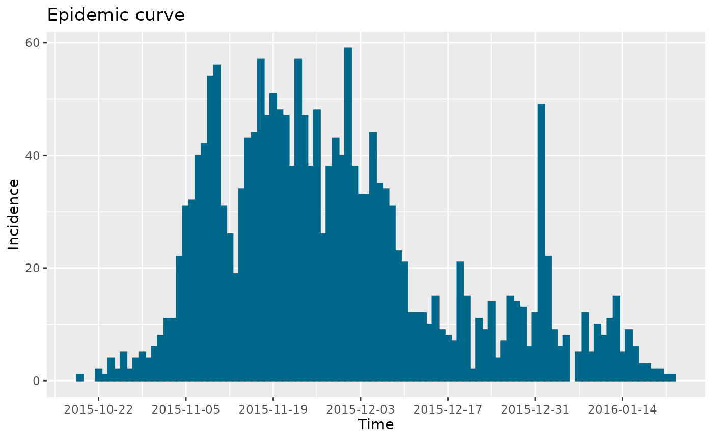
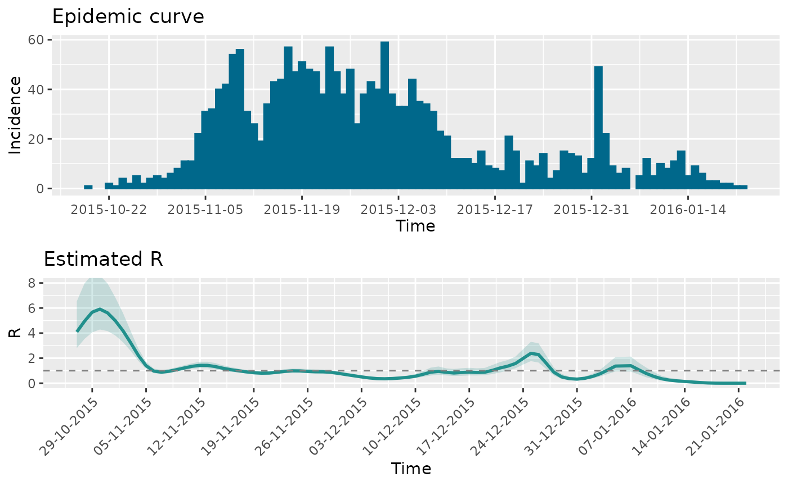
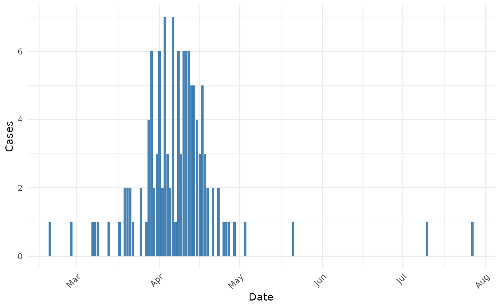

Estimation of time-varying reproduction number
Kylie Ainslie
2026-01-08
Source:vignettes/articles/rt_estimation_validation.Rmd
rt_estimation_validation.RmdIntroduction
The mitey package is a lightweight package designed to
provide easy implementation of the methods used in Ainslie
et al. 2024 to estimate epidemiological characteristics of scabies
transmission. However, these methods are more widely applicable than in
the context of scabies. One of the key functionalities of
mitey is the estimation of the time-varying case
reproduction number using data on time of symptom onset. The case
reproduction number
()
is defined as the average number of new infections that an individual
who becomes infected, or symptomatic, at a particular time point will go
on to cause1, and is useful in
retrospective analyses. The method of Wallinga and Lipsitch estimates
the time-varying case reproduction number by determining the likelihood
of an event occurring for every pair of time points2. The method requires no assumptions
beyond the specification of the serial interval distribution, making it
straightforward and easy to implement.
In this article, we will demonstrate how to use mitey to
estimate
using a synthetic data set and real data. We will also compare the
estimates from mitey to estimates from other R packages
that can be used for similar analyses, namely EpiEstim3 and EpiLPS4.
Mathematical Background
The Wallinga-Lipsitch method estimates the case reproduction number based on the idea that the relative likelihood that case j infected case i depends on their time difference, weighted by the serial interval distribution.
For a given case i that showed symptoms at time t_i, the probability that it was infected by case j (with symptom onset at time t_j) is:
Where: - is the probability mass function of the serial interval for a delay of - The denominator sums over all potential infectors
The reproduction number for cases with symptom onset at time is then:
Where and are the number of cases at times and , respectively.
Function Documentation
wallinga_lipsitch()
Description
Estimates the time-varying reproduction number using the Wallinga-Lipsitch method, which calculates the case reproduction number based on symptom onset data and serial interval distribution.
Usage
wallinga_lipsitch(
incidence,
dates,
si_mean,
si_sd,
si_dist = "gamma",
smoothing = 0,
bootstrap = FALSE,
n_bootstrap = 1000,
conf_level = 0.95,
shift = FALSE
)Arguments
- incidence: Numeric vector of daily case counts.
- dates: Vector of dates corresponding to the incidence data.
- si_mean: Mean of the serial interval distribution.
- si_sd: Standard deviation of the serial interval distribution.
- si_dist: Distribution to use for serial interval (“gamma” or “normal”).
- smoothing: Window size for smoothing estimates (0 for no smoothing).
- bootstrap: Logical; whether to compute bootstrap confidence intervals.
- n_bootstrap: Number of bootstrap samples to generate.
- conf_level: Confidence level for intervals (0.95 = 95% CI).
- shift: Logical; whether to shift estimates by one mean serial interval.
Returns
A data frame with columns:
- date: Original dates from input
- incidence: Daily case counts
- R: Estimated case reproduction number
- R_corrected: Case reproduction number with right-truncation correction
If bootstrap=TRUE:
- R_lower, R_upper: Confidence intervals for R
- R_corrected_lower, R_corrected_upper: Confidence intervals for R_corrected
If shift=TRUE:
- shifted_date: Dates shifted forward by one mean serial interval
Smoothing
The smoothing argument allows users to smooth Rt
estimates. The argument takes an integer value that indicates the window
of time over which to smooth the estimates. If smoothing=0,
no smoothing will be performed. Below is description of how the
smoothing is performed.
-
Initialization:
- The function takes the original Rt estimates (r_estimate) and window size (window)
- It creates an output vector of the same length, initially filled with NA values
- It calculates the half-window size for centering purposes
-
Moving Window Calculation: For each position in the time series, the function:
- Determines window boundaries, adjusting for the start and end of the series
- Extracts values within the window
- Filters out any missing (NA) or infinite values
- Calculates the mean of remaining values
-
Example: For a time series with window size 3:
- At position 2, it averages positions 1, 2, and 3
- At the first position, it averages positions 1 and 2 only
- At positions with missing values, it uses only available data points
Right-Truncation Correction
The Wallinga-Lipsitch method includes a correction for right-truncation, which addresses the bias in reproduction number estimates near the end of the time series. This bias occurs because some secondary cases infected by recent primary cases have not yet been observed due to the delay represented by the serial interval.
Implementation
- For each case with symptom onset at time t, we calculate how many days have passed between t and the end of the observation period.
- Using the serial interval distribution, we calculate the probability that a secondary infection from this case would have been observed by the end of our observation period.
- We then adjust the reproduction number estimate by dividing by this probability, giving more weight to recent cases that have had less time to generate observable secondary cases.
This correction becomes increasingly important for cases near the end of the time series, but can introduce additional variance. Therefore, estimates from the most recent days should still be interpreted with caution.
Synthetic data
First, we will generate a synthetic time series of incidence data
using the function generate_synthetic_epidemic() which uses
a renewal equation to generate the case incidence data. The renewal
equation used is:
Where: - = expected new cases on day - = reproduction number on day - = observed cases on day - = probability mass of serial interval for delay .
Before we generate the synthetic data we need to specify the true time-varying reproduction numbers and the parameters of the serial interval distribution (mean and standard deviation).
# Set seed for reproducibility
set.seed(123)
# True Rt values
true_r_values <- c(
rep(1.5, 20), # Start with R=1.5
rep(2.0, 20), # Increase to R=2.0
rep(0.8, 20), # Decrease to R=0.8
rep(1.2, 20) # Increase to R=1.2
)
# Set serial interval parameters
si_mean <- 5
si_sd <- 2
si_dist <- "gamma"
# Generate synthetic data with high initial cases for stability
synthetic_data <- generate_synthetic_epidemic(
true_r = true_r_values,
si_mean = si_mean,
si_sd = si_sd,
si_dist = si_dist,
initial_cases = 500
)#> date true_r incidence
#> 1 2023-01-01 1.5 500
#> 2 2023-01-02 1.5 3
#> 3 2023-01-03 1.5 56
#> 4 2023-01-04 1.5 137
#> 5 2023-01-05 1.5 145
#> 6 2023-01-06 1.5 179
Estimating the case reproduction number
Next, using the simulated incidence data, we can estimate the time-varying case reproduction number using the method developed by Wallinga and Lipsitch2.
results <- wallinga_lipsitch(
incidence = synthetic_data$incidence,
dates = synthetic_data$date,
si_mean = si_mean,
si_sd = si_sd,
si_dist = "gamma",
smoothing = 0,
bootstrap = TRUE,
n_bootstrap = 1000,
conf_level = 0.95
)#> date incidence R R_corrected R_lower R_upper R_corrected_lower
#> 1 2023-01-01 500 1.513819 1.513819 1.400246 1.640943 1.400246
#> 2 2023-01-02 3 1.507403 1.507403 1.402781 1.620427 1.402781
#> 3 2023-01-03 56 1.510453 1.510453 1.409458 1.624172 1.409458
#> 4 2023-01-04 137 1.502045 1.502045 1.410784 1.606036 1.410784
#> 5 2023-01-05 145 1.478686 1.478686 1.394027 1.575553 1.394027
#> 6 2023-01-06 179 1.474034 1.474034 1.391377 1.566991 1.391377
#> R_corrected_upper
#> 1 1.640943
#> 2 1.620427
#> 3 1.624172
#> 4 1.606036
#> 5 1.575553
#> 6 1.566991Now, we can compare the estimated values to the true that we specified. However, an important thing to note is that the “true” is the instantaneous reproduction number. We are estimating the case reproduction number, and therefore, our estimates should be shifted to the left by one serial interval. When we shift the estimates by a serial interval (blue dashed line), we see that our estimates are in agreement with the true .

Sensitivity to Serial Interval Parameters
The estimates produced by the Wallinga-Lipsitch method are sensitive to the specified serial interval distribution. Let’s explore how changes in the mean and standard deviation affect our estimates for the synthetic epidemic:

Comparing methods
Using the estimRmcmc function within the
EpiLPS package, we can compare our estimates to those
produced my EpiLPS and EpiEstim (by specifying
Cori = TRUE) for estimating the instantaneous reproduction
number. We can also estimate the case reproduction number using the
method of Wallinga and Teuniswallinga2004? as
estimated by EpiEstim (by specifying
WTR = TRUE).
si_spec <- Idist(mean = si_mean, sd = si_sd, dist = si_dist)
fitmcmc <- estimRmcmc(incidence = synthetic_data$incidence, si = si_spec$pvec,
CoriR = TRUE, WTR = TRUE,
niter = 5000, burnin = 2000)
summary(fitmcmc)
#> Estimation of the reproduction number with Laplacian-P-splines
#> --------------------------------------------------------------
#> Total number of days: 80
#> Routine time (seconds): 17.226
#> Method: MCMC (with Langevin diffusion)
#> Hyperparam. optim method: Nelder-Mead
#> Hyperparam. optim convergence: TRUE
#> Mean reproduction number: 1.370
#> Min reproduction number: 0.791
#> Max reproduction number: 2.028
#> --------------------------------------------------------------
Real-world case studies
1. Zika outbreak in Giradot, Colombia (2015)
To illustrate how to apply wallinga_lipsitch() to real
data and compare it to other methods, we’ll use data on daily incidence
of the Zika virus disease in Giradot, Colombia from October 2015 to
January 2016. The data is available from the outbreaks
package and is called zika2015.
lapply(zika2015, head, 10)
#> $incidence
#> [1] 1 2 1 4 2 5 2 4 5 4
#>
#> $dates
#> [1] "2015-10-19" "2015-10-22" "2015-10-23" "2015-10-24" "2015-10-25"
#> [6] "2015-10-26" "2015-10-27" "2015-10-28" "2015-10-29" "2015-10-30"
#>
#> $si
#> [1] 7.771909e-09 2.813233e-05 2.333550e-03 3.004073e-02 1.241007e-01
#> [6] 2.372892e-01 2.605994e-01 1.887516e-01 9.898834e-02 4.014149e-02
zika_epicurve <- epicurve(zika2015$incidence, dates = zika2015$date, datelab = "14d")
zika_epicurve
Now we’ll estimate the case reproduction number using
wallinga_lipsitch().
res_zika <- wallinga_lipsitch(
incidence = zika2015$incidence,
dates = zika2015$date,
si_mean = 7,
si_sd = 1.5,
si_dist = "gamma",
smoothing = 0,
bootstrap = TRUE,
n_bootstrap = 1000,
conf_level = 0.95,
shift = TRUE
)
Compare with EpiLPS and EpiEstim
Below we compare the estimates using the Walling and Lipsitch method
(WL) with those of EpiLPS and the Wallinga and Teunis
method (WT) produced by EpiEstim. We see similar results
and see the expected shif in the estimates of EpiLPS because it is
estimating the instantaneous reproduction number. Additionally, it is
important to note that the below WL estimates have not been
smoothed.
si <- Idist(mean = 7, sd = 1.5)
epifit <- estimR(zika2015$incidence, dates = zika2015$dates, si = si$pvec, WTR = TRUE)
2. Influenza A (H7N9) Outbreak in China (2013)
Again, we’ll use a dataset from the outbreaks package.
For this analysis, we’ll use data from the 2013 influenza A (H7N9)
outbreak in China.
data(fluH7N9_china_2013)
str(fluH7N9_china_2013)
#> 'data.frame': 136 obs. of 8 variables:
#> $ case_id : Factor w/ 136 levels "1","2","3","4",..: 1 2 3 4 5 6 7 8 9 10 ...
#> $ date_of_onset : Date, format: "2013-02-19" "2013-02-27" ...
#> $ date_of_hospitalisation: Date, format: NA "2013-03-03" ...
#> $ date_of_outcome : Date, format: "2013-03-04" "2013-03-10" ...
#> $ outcome : Factor w/ 2 levels "Death","Recover": 1 1 1 NA 2 1 1 1 NA 1 ...
#> $ gender : Factor w/ 2 levels "f","m": 2 2 1 1 1 1 2 2 2 2 ...
#> $ age : Factor w/ 61 levels "?","15","2","21",..: 58 7 11 18 20 9 54 14 39 20 ...
#> $ province : Factor w/ 13 levels "Anhui","Beijing",..: 11 11 1 8 8 8 8 13 13 11 ...The dataset contains details about 136 confirmed cases of H7N9 influenza in China between February and May 2013.

The H7N9 influenza outbreak shows a clear epidemic pattern, with most cases occurring between March and April 2013. Based on the literature, the serial interval for influenza A (H7N9) has been estimated to be around 7-9 days.
Let’s now estimate the time-varying reproduction number using the Wallinga-Lipsitch method:
# Estimate Rt using the Wallinga-Lipsitch method
# For H7N9, we'll use serial interval estimates from the literature
# Mean: 8.1 days, SD: 3.4 days (based on Cowling et al., 2013)
h7n9_rt <- wallinga_lipsitch(
incidence = h7n9_complete$cases,
dates = h7n9_complete$date_onset,
si_mean = 8.1,
si_sd = 3.4,
si_dist = "gamma",
smoothing = 7, # Apply 7-day smoothing for weekly patterns
bootstrap = TRUE,
n_bootstrap = 500,
conf_level = 0.95,
shift = TRUE
)
To provide a comprehensive methodological comparison, let’s compare
our Wallinga-Lipsitch implementation with the EpiLPS and
EpiEstim packages, similar to our Zika analysis:

The comparison reveals several interesting methodological insights when applied to the H7N9 outbreak:
Timing differences: The Wallinga-Lipsitch (WL) method and Wallinga-Teunis (WT) method from EpiEstim produce roughly similar temporal patterns, but with some timing differences. This is expected as they both estimate the case reproduction number but use slightly different mathematical approaches.
EpiLPS vs. WL/WT: The EpiLPS method, which estimates the instantaneous reproduction number, shows a different pattern, particularly in terms of when changes in transmission are detected. This is consistent with the theoretical differences between instantaneous and case reproduction numbers.
Uncertainty handling: Note that our WL method includes confidence intervals (shown as the blue shaded region), providing important context about estimation uncertainty that should be considered when interpreting results.